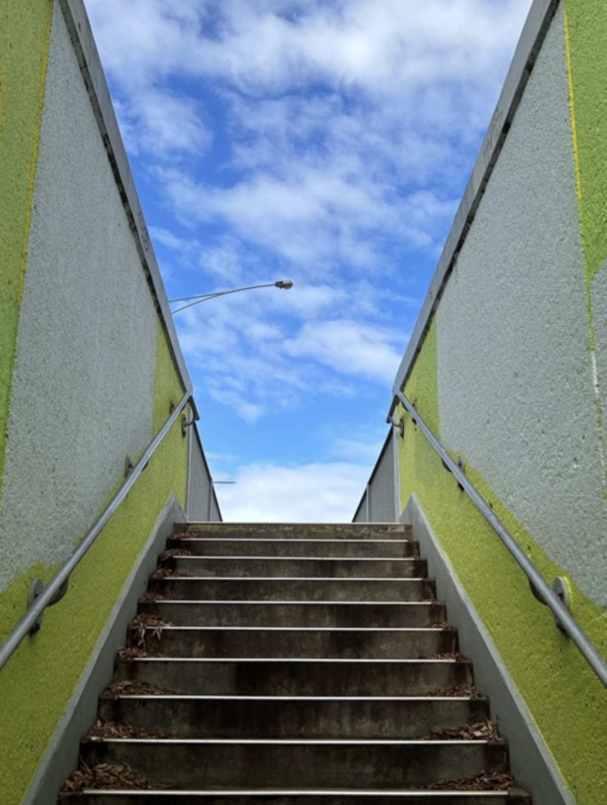
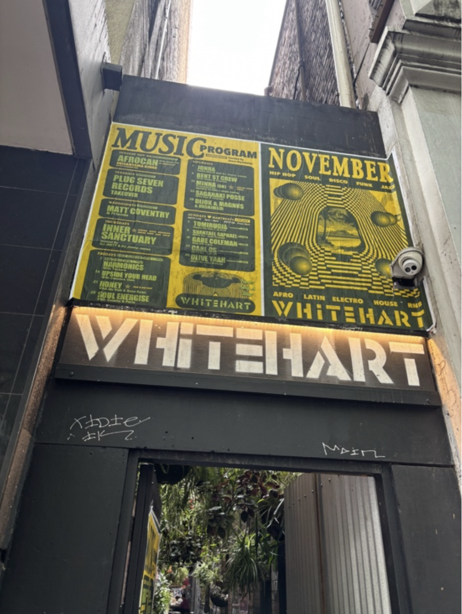
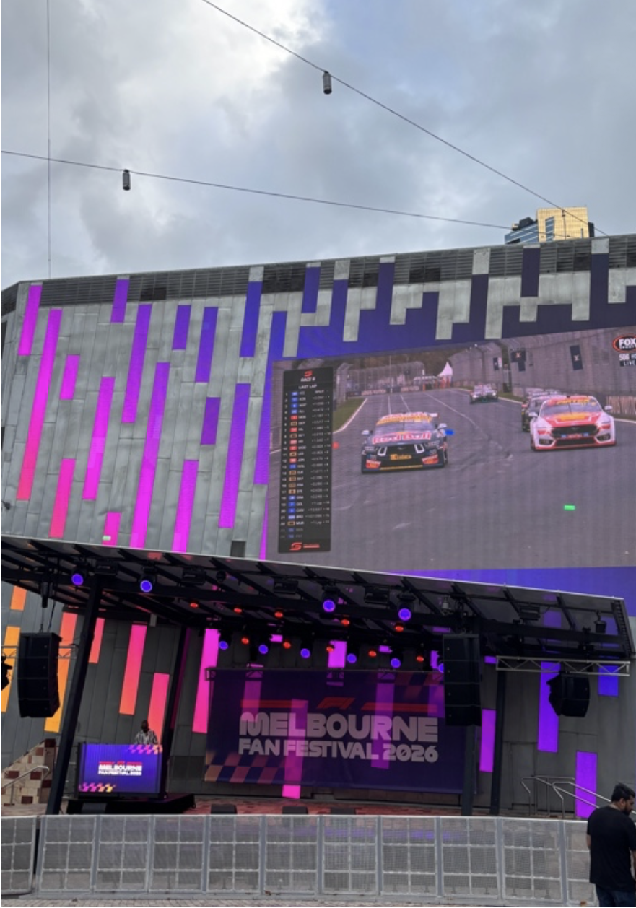
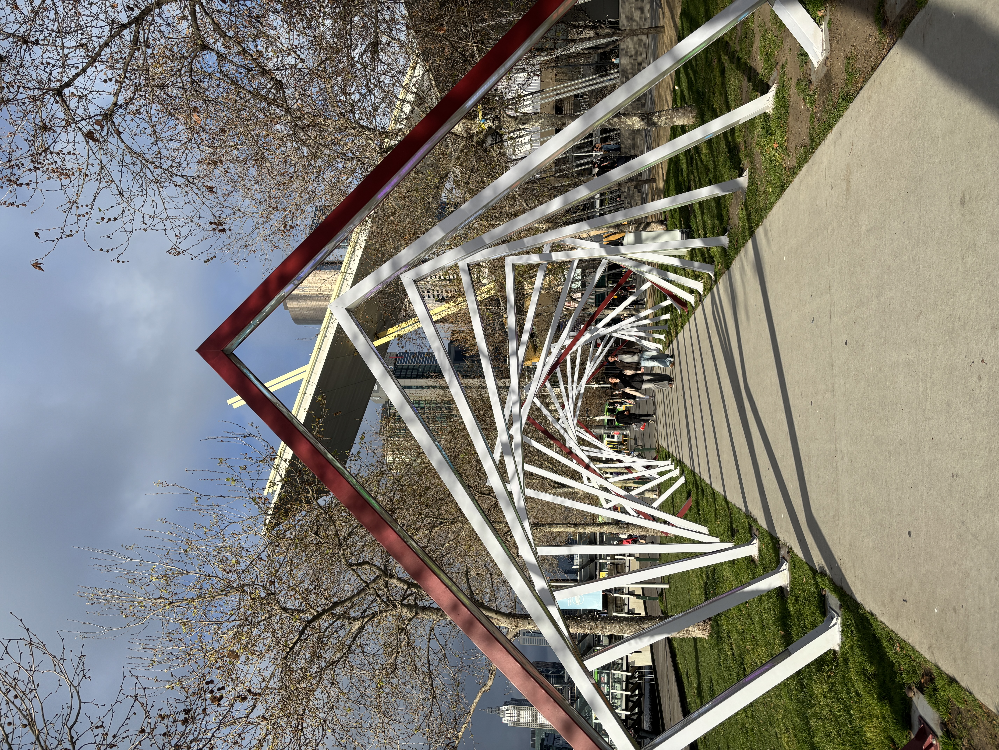
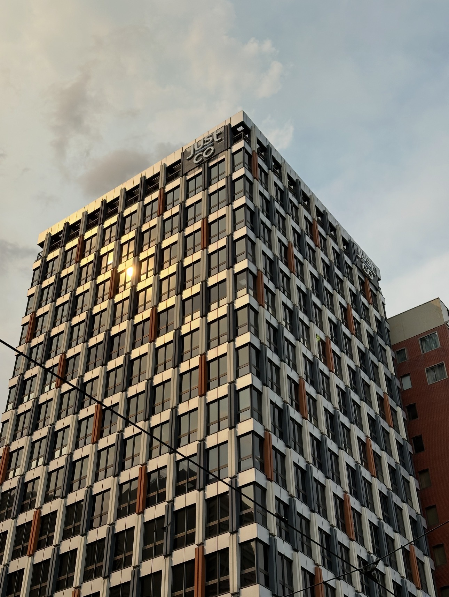
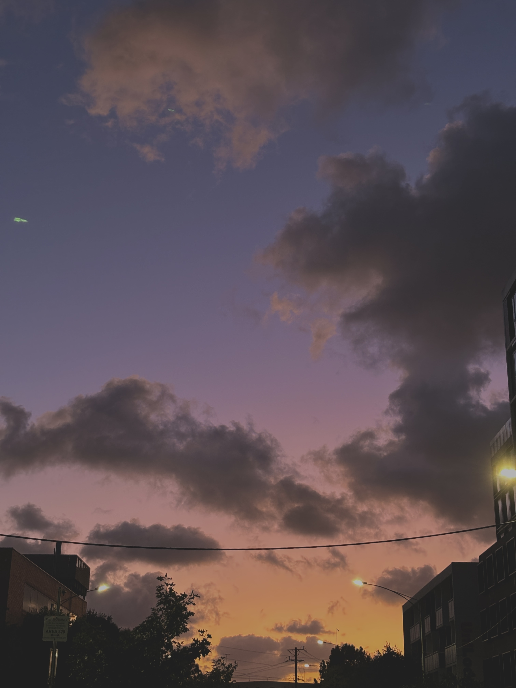

Outside Gallery
Exterior Moments
A visual collection of exterior scenes exploring openness, found details, architecture and public space.






Outside Gallery
A visual collection of exterior scenes exploring openness, found details, architecture and public space.





